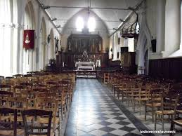

Son existence est fort ancienne (12ème), en 1475 l’église est entièrement incendiée sous l’ordre du Roi Louis XI afin que la Ville ne soit pas livrée aux Anglais. Le monument actuel date depuis sa consécration le 23/11/1500. D’allure élégante avec des murs en damier, alternant silex taillés et pierres, composée de 2 nefs identiques, 1 tour massive épaulée de contreforts et une toiture en flèche qui fut remplacée en 1786 par une toiture pyramidale. Elle subit quelques vandalismes, notamment pour le mobilier lors de la révolution : tableaux et chasse brûlés, cloches fondues…En 1845 est rajouté à l’édifice une bâtisse rectangulaire en briques pour donner accès au clocher.
